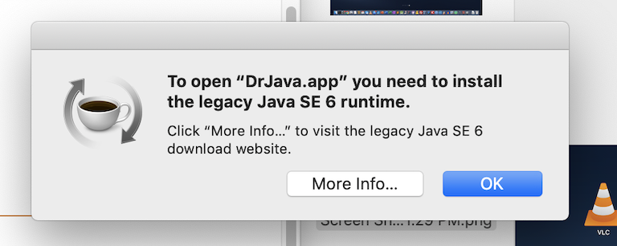
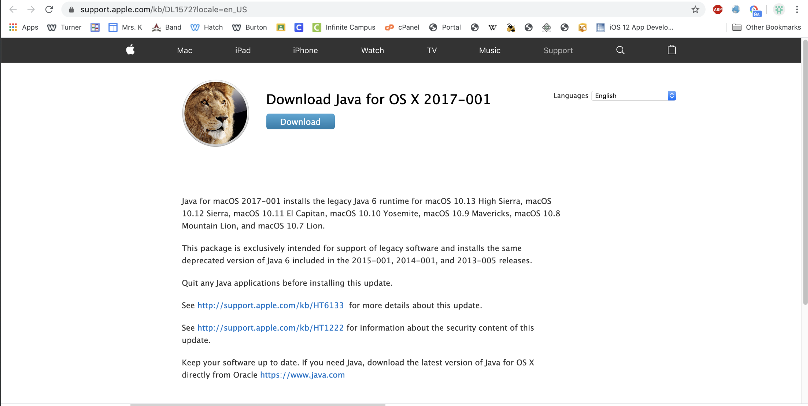

Throughout my AP CS A class, I was required to use an IDE called DrJava to write and compile my programs. My teacher told us that we would be using DrJava because of its simplicity, especially since most of us were new to coding. Although the program was easy to install on Windows, I had a bit of trouble installing it on macOS. In this post, I will go over how to install DrJava on macOS.
First, you need to check what macOS version you have. To do this, just click the apple logo on the top left of your desktop and then click About This Mac. You should then be able to see your Mac's version in a dialog box that pops up. After noting down the version scroll down to get the tutorial for your macOS version.
First, go to this link and install the osx.tar.gz file that was modified on 2014-08-26. If you need to, you can also install a newer version of DrJava. I recommend installing the osx.tar.gz file because it's the most recent one that can be extracted into a full application. If you need the newer version, then make sure to download the .jar file.
Now, in order to actually grant access for DrJava to open, you need to enter a single command into terminal. You can open terminal by searching "terminal" in spotlight search (open spotlight search by pressing cmd+space) or you can open finder and navigate to Applications > Utilities > Terminal.app. Once you get terminal opened up, you need to enter the following command:
sudo spctl --master-disable
Next, if you try opening the file, you may get a message saying that you need to install Java in order to actually compile any files. Because this version of DrJava relies on an older version of Java (Java 6.0), you need to install an Java 6.0 for the IDE to actually be able to compile. As a result, go to Oracle's website and install the Java version that is needed for your IDE.
Installing DrJava on newer versions of macOS is much harder to do every since Apple has removed 32-bit app support in their newer machines (such a dumb move imo). As a result, many applications stopped working on newer macOS versions. Nevertheless, it is still possible to install DrJava on Version 10.15+.
So first, I recommend you go through the instructions of how to install DrJava on Version 10.14 or lower. After following those instructions you may get the following message after opening DrJava:
Go ahead and click More Info, and click Download.
After downloading the file and clicking open, you will see that you can't actually proceed any further because 32-bit applications can't be installed on macOS Catalina or newer. However, don't worry! There is a workaround which you can read about here.
After following those instructions, you should be able to install the Java SE Runtime Environment needed for DrJava to work.
If you have dark mode enabled, DrJava will look completely black because it's not optimized for dark mode yet. Enter this command to force DrJava to run in light mode:
defaults write edu.rice.cs.drjava.DrJava NSRequiresAquaSystemAppearance 1
Also if DrJava seems to look pixelated when you open it, then I suggest downloading this app called Retinizer. After downloading, go ahead and drag and drop DrJava into Retinizer and it will optimize DrJava for retina display screens.
Please email me if you have any other difficulties getting DrJava to work on your Mac. Happy coding!